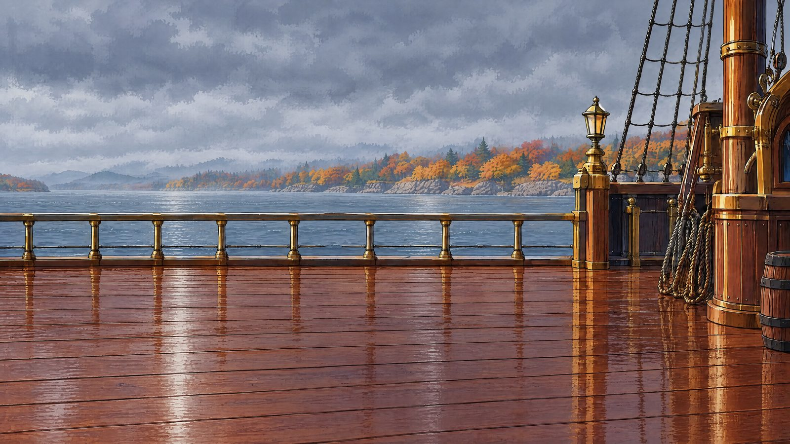

The three working tools behind each episode of Weather or Not with Miso, in the order the show uses them: the weather data the script is written from, the set Miso stands on, and the thumbnail.
Pick an episode date and get the forecast brief the script is written from: sunrise and 7 AM temperature, today, tonight, tomorrow, five days, and alerts. Live from Open-Meteo and the National Weather Service.

Forty fall plates, ten weather states by day and night, on the ship deck and in the cabin. Filter by weather and check Miso's placement.
One layout for every episode: pick a monthly weather background, set the date and forecast high, and save the YouTube thumbnail.